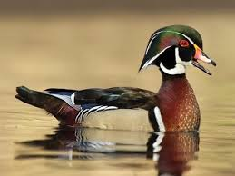
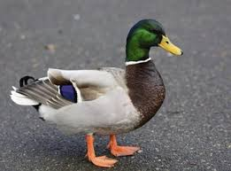

Wood duck
Length: 12-1/2"
Width: 6"
Notation: by Don Anderson, 1990
Other: Picture of cat tails

Northern Shoveler
Length: 13-1/2"
Width: 5-1/2"
Notation: by Don Anderson,
because of his oversized "shovel" bill, the shoveler is often
overlooked as one of the handsomest and colorful birds!
Other: Picture of cat tails

Cinnamon Teal
Length: 12"
Width: 5-1/2"
Notation: by Don Anderson, 1995
Other: Picture of cat tails